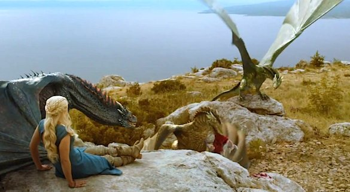

Daenerys sárkányai
Mik azok a sárkányok?
A sárkány mitikus lény, jellemzően nagy és hatalmas hüllő, mágikus vagy spirituális tulajdonságokkal. Gyakori, hogy szárnyaik vannak, amivel repülni is tudnak. Leggyakrabban tűzokádással támadnak.
| Név | Kor | Szín |
|---|---|---|
| Drogon | 7 éves | Szürke |
| Rhaegal | 7 éves | Zöld |
| Viserion | 6 éves | Kék |